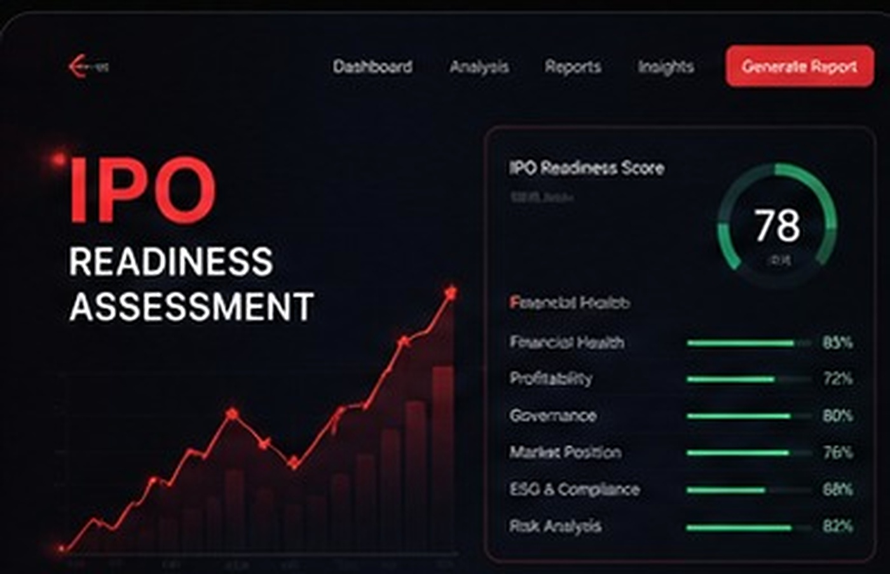
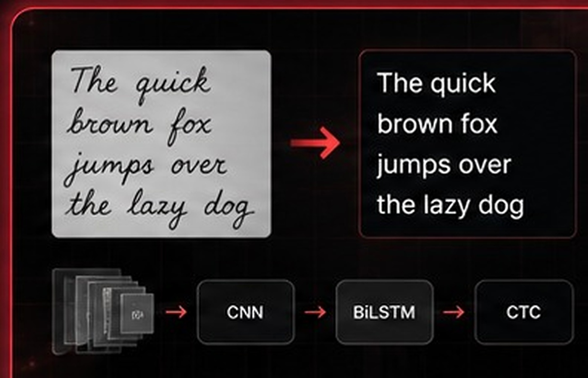
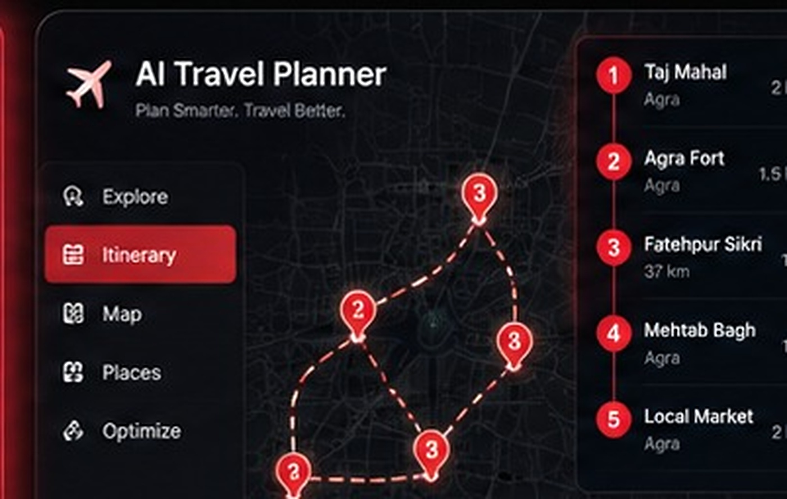
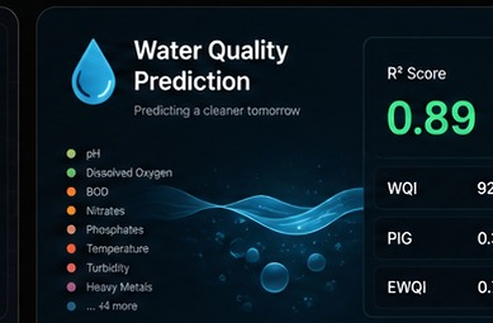

01
◎
Predictive AI
Classification, risk scoring, regression, feature engineering and model optimization designed around measurable outcomes.
MACHINE LEARNING · DATA SCIENCE · AGENTIC AI
Machine Learning Engineer building predictive, generative, and agentic AI systems.
I build intelligent systems that move from raw data to real decisions.
Machine Learning Engineer with hands-on experience across predictive modeling, classification, risk scoring, ETL pipelines, deep learning, OCR, LLM workflows and agentic systems. My work spans the full ML lifecycle — from ingestion and feature engineering to training, evaluation, inference and deployment.
Classification, risk scoring, regression, feature engineering and model optimization designed around measurable outcomes.
LLM-powered applications using open-source models, structured outputs, efficient inference and modern orchestration.
Tool-using and multi-step workflows that combine reasoning, APIs, retrieval and deterministic tools into useful agents.
Practical experience across modeling, deep learning, LLMs, data engineering and production tooling.
Scikit-learn · XGBoost · LightGBM · Random Forest · Logistic Regression · SVM · K-Means · GridSearchCV · Cross-Validation
TensorFlow · Keras · PyTorch · CNN · LSTM · BiLSTM · CRNN · CTC Loss · Computer Vision
Hugging Face Transformers · Open-source LLMs · LangChain · LangGraph · Tool Calling · ReAct · Multi-Agent Workflows · Gemini API · LoRA / PEFT
Python · SQL · Pandas · NumPy · ETL Pipelines · Apache Airflow · PySpark · dbt · MySQL · MSSQL · ClickHouse
Docker · FastAPI · MLflow · AWS S3 · Azure ML Studio · Streamlit · Git · GPU Inference
PostgreSQL · PostGIS · Power BI · Plotly · Matplotlib · Seaborn · Streamlit

FINTECH · AI ASSESSMENT
CASE STUDYEnd-to-end IPO scoring engine across six financial dimensions, combining risk classification, peer clustering and financial-news sentiment analysis.

COMPUTER VISION · RESEARCH
PUBLICATIONCRNN architecture combining CNN, BiLSTM and CTC loss. Preprocessing and augmentation improved character error rate while scaling training to 90,000+ labeled samples.

GEOSPATIAL · OPTIMIZATION
FULL STACKFull-stack travel planning platform with a PostGIS-backed attraction model, must-visit ranking and TSP route optimization for multi-city itineraries.

ENVIRONMENT · REGRESSION
PREDICTIVE MLMulti-output regression system predicting WQI, PIG and EWQI from 11+ water parameters with automated model comparison and evaluation.
Project repositories and live demos are not currently public. Detailed case studies can be added as projects are published.
TEAMLEASE REGTECH
MAY 2025 — DEC 2025Built data-driven compliance systems that connected behavioral signals, machine learning and operational reporting.
Research published in Reinventing Higher Education Through Digital Transformation and Smart Campuses. The work explores deep-learning-based handwritten text recognition and digital conversion.
View DOI ↗Shortlisted in the top 3,000 of the applicant pool through Amazon University Talent Acquisition, India.
Leadership role at JYC, JUET, alongside serving as Additional General Secretary.
Speaker coordination, logistics and cross-functional execution.
ML foundations, geodata processing with Python & ML, START program and Microsoft AI in Action.